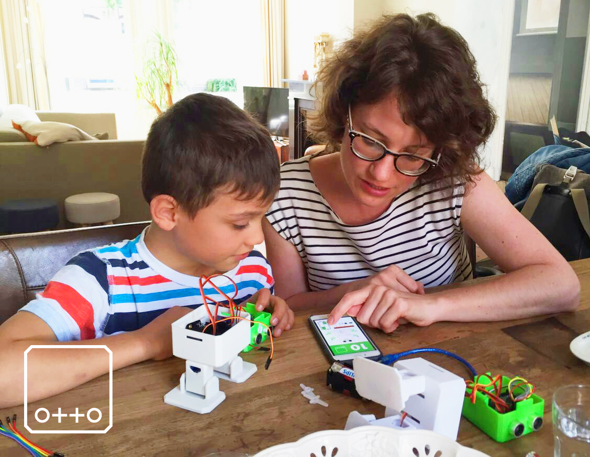

Robô Otto
O que ele consegue fazer?
Quem é Otto?
Ele vem em um kit com tudo que é preciso paa montá-lo!
O robô Otto é um ótimo exemplo didático de aplicação da internet das coisas(IoT) que utiliza, majoritariamente a plataforma do arduino para automatizar suas funções,o qual é responsável por dar "vida" ao Otto, assim como fazer com que ele se comunique com os mais variados tipos de equipamentos e ambientes.
Kit Básico Otto
| Componentes | Quantidade |
|---|---|
| Pés em PLA branco | 2 |
| Pernas em PLA branco | 2 |
| Corpo em PLA branco | 1 |
| Cabeça verde PLA | 1 |
| Micro servos motores | 4 |
| Conjunto de parafusos | 1 |
| Nano ATmega328 | 1 |
| Cabo USB | 1 |
| Blindagem de E/S nano | 1 |
| Sensor de ultrassom | 1 |
| Plezo Buzzer | 1 |
| DuPoint fácil de conectar cabos F/F | 1 |
| Chave Philips | 1 |
| Caixa de bateria AA com interruptor | 1 |
| Manual de Instruções impresso | 1 |